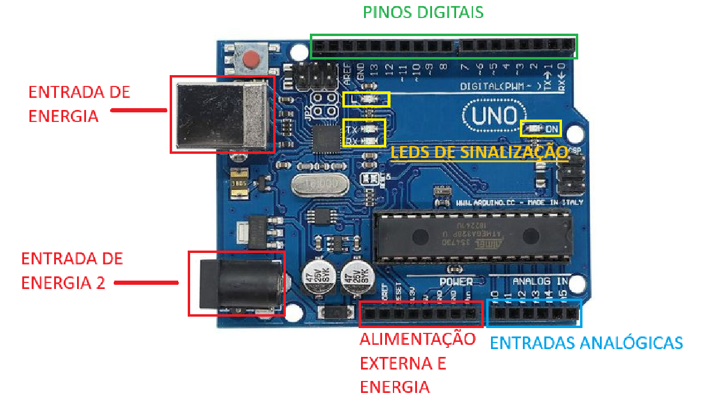

MAPEANDO A PLACA ARDUÍNO UNO R3

Na placa do Arduino UNO, existem cerca de 4 tipos de regiões: Energia no geral, analógicas, pinagem e Leds de sinalização.
Vendo o esquema montado, é possível identificar com clareza que essas regiões são bem separadas e cada uma possui sua função, sendo:
Alimentação e Energia: Alimentar componentes externos e a própria placa.
Analógicas: Entrada exclusiva para interpretações analógicas.
Pinagem: Entrada para jumpers para permitir comunicação com os componentes externos.
Leds sinalizadores: Sinalizam se a placa está ligada, funcionando, etc.
Concluindo: O mapeamento da placa é bem simples e fácil de entender e as separações das regiões são bem definidas e claras,
impedindo erros por bobos.